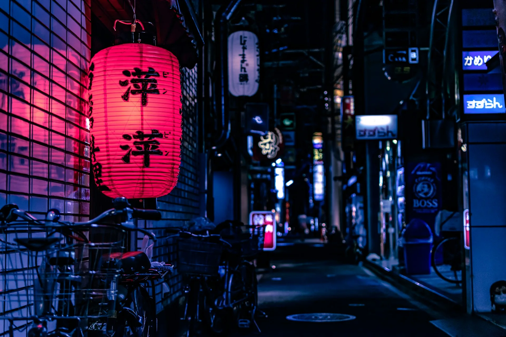

Step by Step
Six stages of
considered making
"I have never made a good illustration quickly. Every piece that has mattered has taken longer than I expected — and been better for it."
Concept & Brief
Every commission begins with a thorough conversation — via email and, for larger projects, a 60-minute call. I ask about emotional intent, audience, medium preferences, and constraints. I read any text that is being illustrated. I look at references you offer and compile my own.
The brief document I produce at the end of this stage functions as a contract of shared understanding — not a legal document, but a statement of what we are both trying to make, and why.
Reference & Research
Before a mark is made, I gather. Reference images (not to copy, but to understand light, form, and feeling), historical illustrations relevant to the subject, typographic considerations for book covers, and colour references. This stage is invisible in the final work, but it underlies everything.

Sketch & Composition
I produce 3–5 thumbnail sketches — small, rough, and rapid. These explore different compositional approaches: the position of the viewer, the relationship between elements, the weight and movement of the image. Two or three may be developed into more finished pencil sketches.
I present these digitally, and we discuss. This is the most important revision stage. Once composition is approved, fundamental changes become costly.
Colour Study & Approval
A tighter study of the approved sketch — fully realised in colour, but still loose enough to adjust. We discuss palette, mood, and any emotional associations with the chosen colours. This stage often reveals things the sketch could not — colour changes the meaning of every line.
Up to two colour variations are offered. Once the colour study is approved, the final render begins.
Final Render
The finished piece — made in watercolour, digital, or mixed media as agreed in the brief. This stage is not revisable in structure (that was resolved at sketch stage), but two rounds of minor revisions are included: adjustments to colour, small compositional tweaks, text treatment for covers.

Delivery & Rights
Final files are delivered via a private download link: high-resolution TIFF (minimum 300dpi at final print size), sRGB JPG, and PDF where relevant. For digital editorial work, layered PSD or Procreate files are available on request. Usage rights documentation is included with every delivery.
For watercolour originals, the physical artwork may be purchased separately at an agreed price. The original is shipped insured from London.